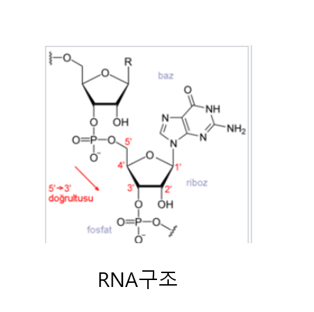
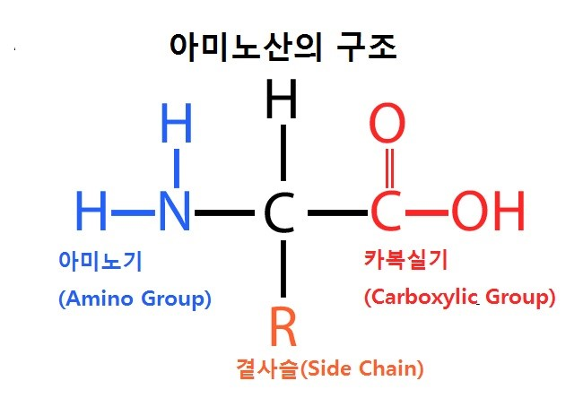

리보핵산(RiboNucleic Acid, RNA) 은 오탄당의 일종인 리보스를 기반으로 뉴클레오타이드를 이루는 핵산의 한 종류이다.
하나의 나선이 길게 꼬여 있는 구조를 지니며 DNA의 일부가 전사되어 만들어진다. RNA는 단백질을 합성하는 과정에 작용하며 일부 바이러스는 DNA 대신 RNA를 유전물질로 갖기도 한다. 핵
염기로 DNA와 달리 티민 대신 우라실우라실을 갖는다.
최근 RNA 스스로 효소와 같은 기능을 가질 수도 있음이 발견되었다. 이것을 리보자임(ribozyme)이라 한다.
구조
RNA는 오탄당인 리보스를 기반으로 사슬구조를 이룬다. 오른쪽 그림에서와 같이 리보스에 있는 다섯개의 탄소에 번호를 붙였을 때 1번 탄소가 핵염기와 연결되며 (이 그림의 경우 구아닌) 3번과 5번은 인산에 연결된다.
1번 탄소에 연결되는 핵염기는 구아닌 이외에도 아데닌, 우라실, 시토신이 있다. 인산은 당과 당 사이를 연결하여 사슬을 이룬다. 핵염기는 보통 다음과 같은 약자로 쓰인다.
● A - 아데닌
● G - 구아닌
● U - 우라실
● C - 시토신 (사이토신)
핵염기는 수소결합에 의해 서로 짝을 이루어 결합할 수 있다. 아데닌은 우라실(DNA의 경우 티민)과 구아닌은 시토신과 상보적인 짝을 이룬다.
RNA는 DNA와 달리 1개의 폴리뉴클레오타이드로 이루어진 단일 가닥이며, 자체적으로 상보적 염기쌍을 형성해 접힘으로써 고유의 입체 구조를 가질 수 있다.
RNA에 존재하는 리보스의 2'탄소에 결합된 하이드록시기는 당-인산 골격의 인산이에스터 결합을 분해하는데 관여하므로 RNA는 DNA보다 빠르게 가수 분해되어 덜 안정하다.
역할
바이러스와 같은 일부 미생물에서 RNA는 유전자로서 기능한다. 그러나, 대부분의 진핵생물과 다세포생물은 DNA가 유전자의 역할을 하고 RNA는 단백질 형성 과정 을 맡는다.
단백질 형성과정
1. DNA에서 mRNA가 전사된다. 동시에 세포 내에서는 아미노산 활성화 효소에 의해 tRNA에 아미노산(amino acid)이 부착된다.
2. mRNA의 뉴클레오타이드는 3개씩 짝을 이뤄 하나의 아미노산을 지정한다. 예를 들어 UUU(우라실-우라실-우라실)는 페닐알라닌을 지정한다.
3.전사된 mRNA가 리보솜의 소단위체(small subunit)에 부착된다.
4. 번에서 아미노산이 부착된 tRNA가 mRNA의 지정된 염기서열의 뉴클레오타이드에 부착된다.(오른쪽 그림의 첫 단계)
5. 리보솜의 큰 단위체(large subunit)가 소단위체(small subunit)와 결합한다.
6. mRNA의 다음 염기서열과 짝을 이루는 tRNA가 리보솜에 들어오고 여기에 부착된 아미노산은 앞의 tRNA에 부착된 아미노산과 결합한다.(오른쪽 그림의 두 번째 단계)
7. mRNA의 염기서열이 끝날 때까지 위 과정이 반복되면 긴 아미노산 사슬이 형성된다. 이것이 단백질이다. 단백질은 효소에 의해 접혀 적절한 모양을 갖추게 된다.(오른쪽 그림의 끝 단계)
8. 세포 내에는 수많은 리보솜이 있어 하나의 mRNA를 이용하여 동시에 작업할 수 있다.

번역
번역(영어: translation)은 센트럴 도그마(Central Dogma)의 마지막 과정으로, 생체 내에서 DNA로부터 복제된 mRNA의 염기서열을 단백질의 아미노산 배열로 고쳐 쓰는 작업이다.
이 과정은 세포질 내의 단백질 합성 공장과 같은 리보솜에서 일어난다. 리보솜은 두 개의 서로 다른 부분으로 나뉘며, 현재 저해상도의 엑스선 결정 구조가 알려져 있고,
이를 통해 단백질 합성에 관여하는 특이한 아미노산 및 RNA들의 역할이 규명되었다. 리보솜에서는 단백질 합성의 청사진이라 볼 수 있는 mRNA(messenger RNA)의 정보(코돈)를
근거로 이에 상보적으로 결합할 수 있는 tRNA(transfer RNA)가 날라오는 아미노산들을 차례차례 연결시켜서 단백질을 합성한다. 합성이 시작될 때 처음에 메티오닌(Methionine)부터 오는게 일반적이며,
합성을 끝내는 부분의 mRNA에는 특정한 정지신호 역할을 하는 코돈이 있다. 아미노산이 붙어있지 않은 tRNA가 리보솜에 들어와 mRNA의 정지 코돈과 결합하면 아미노산 중합반응이 끝나게 된다.
합성된 단백질은 그 단백질이 갖는 특정한 신호에 의해 목적지로 이동하게 된다.